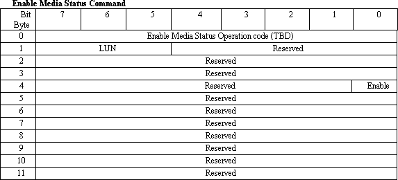
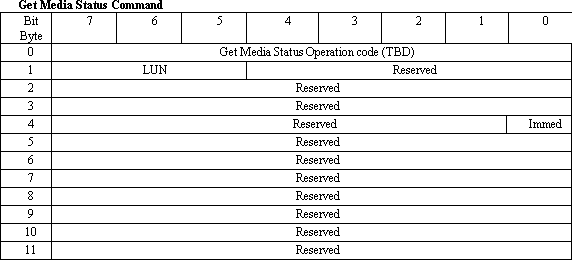

Media Status Notification Support Specification for SCSI and ATAPI Devices, Version 0.1
- Contents:
- Introduction
- Enabling and Disabling Media Status Notification Support
- Returning Media Status
- Reporting Media Status Changes
- SCSI Compatibility Considerations
Introduction
A major shortcoming of removable media devices on PC platforms is their inability to report to the host when the user attempts to eject the medium. Currently most removable media devices just eject the medium when the user presses the Eject button, and potentially any data the operating system has not saved to the device is lost. Various volume tracking and locking schemes reduce this risk, but do not eliminate it. Ideally, devices will have a means of communicating to the host that the user wants to eject the medium or has inserted a new medium.
This specification defines a protocol for providing this function for SCSI ATA and ATAPI devices. The support is enabled using a new SCSI command, ENABLE MEDIA STATUS, and the media status is retrieved using a new SCSI ATA command, GET MEDIA STATUS.
Because it is difficult for a SCSI target to asynchronously interrupt the host due to lack of industry support for Asynchronous Event Notification, the GET MEDIA STATUS command is not completed by the target until a media status change occurs. If tagged command queuing is not supported by the target and/or the host, a means of polling the target for status changes is also specified. Note that in some controllers the unused words in the ID Drive data are returned as 0FFFFh. Thus it may be better if the Status Notification support was returned as a 2 bit field, where 00b, 11b are both defined as drive not supporting Status notification.
Enabling and Disabling Media Status Notification Support
To maintain compatibility with existing BIOS implementations and operating systems, the target must assume that the host does shall not enableimplement Media Status Notification support until the ENABLE MEDIA STATUS command is issued by the host, as described in this section.
When the host enables the support using the ENABLE MEDIA STATUS command, the target shallmust respond as described in this specification. When the host disables this featuresupport, the target must default to normal operating modes. A SCSI bus reset, bus device reset or power on condition must also cause the target to return to normal operating modes.
ENABLE MEDIA STATUS Command
The ENABLE MEDIA STATUS command requests that the SCSI Target enable or disable Media Status Notification. If Media Status Notification is not supported, the target shall return CHECK CONDITION (Sense Key 05 ILLEGAL REQUEST, Sense Code 24 INVALID FIELD IN COMMAND PACKET).

An Enable bit of one indicates that the target shall enable Media Status Notification. If the target currently has Media Status Notification enabled, the target shall return CHECK CONDITION (Sense Key 05 ILLEGAL REQUEST, Sense Code 4E OVERLAPPED COMMANDS ATTEMPTED).
An Enable bit of zero indicates that the target shall disable Media Status Notification.
Returning Media Status
The media status information is returned when the host issues the GET MEDIA STATUS command described below.
GET MEDIA STATUS Command
The ENABLE MEDIA STATUS command requests that the SCSI Target report media status changes. If Media Status Notification is not supported or not enabled, the target shall return CHECK CONDITION (Sense Key 05 ILLEGAL REQUEST, Sense Code 24 INVALID FILED IN COMMAND PACKET).

This command has two modes of operation. If the Immed bit is set to one, and if the state of the target is normal (that is, medium not inserted, Eject button not pushed), the GET MEDIA STATUS command shall return good status. If the state of the target has changed, a CHECK CONDITION command shall be returned, and the subsequent REQUEST SENSE command shall return the appropriate keys as defined in the Reporting Media Status Changes section below.
If the Immed bit is set to zero (and the target supports tagged command queuing) and if the state of the target is normal (that is, medium in the target, medium not changed, Eject button not pushed), the GET MEDIA STATUS command shall be queued by the target until the status of the medium changes, or some error condition occurs. If the state of the target has changed, a CHECK CONDITION command shall be returned, and the subsequent REQUEST SENSE command shall return the appropriate keys as defined in the Reporting Media Status Changes section below.
If the Immed bit is set to zero and the target DOES NOT support tagged command queuing, the target shall return CHECK CONDITION (Sense Key 05 ILLEGAL REQUEST, Sense Code 24 INVALID FIELD IN COMMAND PACKET).
Reporting Media Status Changes
When a media status change has been detected, the GET MEDIA STATUS command shall return CHECK CONDITION. The target shall return the following sense data:
Sense Key 06 (UNIT ATTENTION)
Sense Code E0 (MEDIA STATUS CHANGE)
Additional Sense Code Qualifier:
00 - EJREQ
This Qualifier indicates that the user has attempted to eject the medium. Usually this Qualifier will be set when the user presses the Eject button on the target. If theThe target is capable of preventing removal of the media, the target shallmust not allow the medium to be ejected until an EJECT command is received from the host. This Qualifier shallmust not be set again in response to the GET MEDIA STATUS command until the user subsequently releases the button and presses it again.
01 - NEWMED
This Qualifier indicates that a medium has been newly inserted in the target. The Qualifier must not be set for more than one invocation of the GET MEDIA STATUS command, until the user removes or reinserts the medium. In other words, when the user inserts a new medium in the target, and a GET MEDIA STATUS command is issued, the target will set this Qualifier. The next GET MEDIA STATUS command must not result in this Qualifier being set again unless the medium has been removed and reinserted.
All other Qualifiers are reserved.
SCSI Compatibility Considerations
SCSI commands must be processed exactly the same as they would be if Media Status Notification was not enabled. When the GET MEDIA STATUS command is received by the SCSI target, the status changed error codes must be reported as described in "Returning Media Status" earlier in this specification. However, the state of the bits must not be cleared by any other SCSI command. The insertion of a new medium must be reported independently with both the GET MEDIA STATUS and other SCSI commands. For example, if the user inserts a new medium and the target is accessed with an SCSI command, the CHECK CONDITION with UNIT ATTENTION must be reported, but the target must also report the NEMED error when it receives the next GET MEDIA STATUS command. The behavior must be the same if, after the medium is inserted, the GET MEDIA STATUS command is received before the next SCSI command.
When the user presses the Eject button on the target, the SCSI commands must not be affected, but the EJREQ status must be reported when the first GET MEDIA STATUS command is received after the button is pressed, (it is reported only once after each button press). The SCSI target must continue to operate as normal. If the host determines that it is safe to eject the medium, an SCSI EJECT command shall be issued to the target by the host, at which time the target shall eject the medium.
Revision Record Edition Date Published Revised Comments 0.1 March 1996 First Draft Version Send comments to billpa@microsoft.com.
|
|